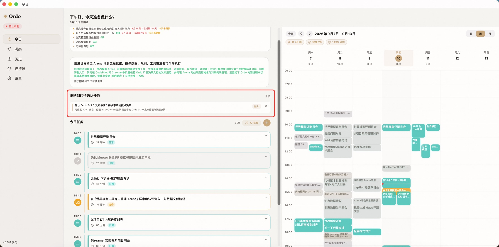
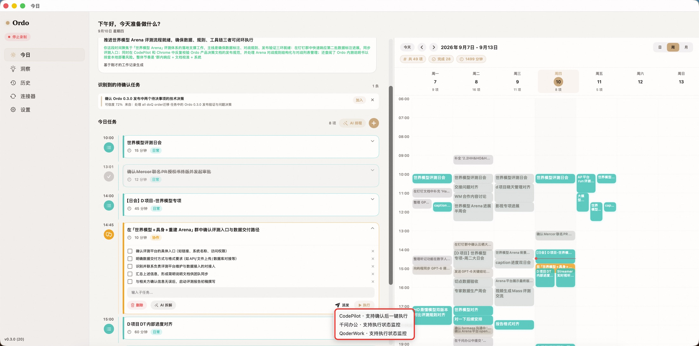

上下文重复搬运
用户在不同工具中反复解释背景、复制材料和重建任务。
Ordo 是运行在个人电脑上的 AI 执行助理：理解用户正在推进的工作，把意图整理成可执行任务，派发给合适的 Agent，并持续跟踪结果与验收。
能力分散在代码、研究、文档、数据和办公工具中。真正缺少的是连接用户目标与执行结果的协调层。
用户在不同工具中反复解释背景、复制材料和重建任务。
派发之后，状态、失败原因和结果证据散落在多个会话里。
哪个工具更适合、怎样输入更有效，仍依赖用户自己记忆和试错。
它先理解用户当前工作的真实语境并思考下一步，再按用户的实际需求和操作习惯拆解执行路径，最后找到最合适的 Agent 工具完成任务。
结合工作记录，判断用户真的在做什么。
识别目标、阻塞点和最值得推进的动作。
按实际需求、习惯和上下文组织步骤。
优先检索相似任务及上次使用的 Agent。
把完整执行包交给最合适的工具。
以下界面展示 Ordo 如何把用户真实的工作记录，逐步转化为可执行、可派发的任务。红色标注用于说明产品机制。

Ordo 读取当天的工作轨迹、任务变化与上下文，形成对当前工作的连续理解。它会识别尚未闭环的事项，并说明判断来源与可信度。
重点不是总结屏幕内容，而是从真实工作中推断目标、阻塞点和下一步行动。
AI 不套用固定模板。它结合任务目标、现有材料、用户过往做法与当前约束，生成能够落地的步骤。
用户可以增删、重排或补充子任务；这些选择会成为后续拆解与工具推荐的依据。

Ordo 根据任务类型、工具能力和历史执行效果推荐 Agent。遇到相似任务时，优先检索上一次任务及对应工具，在有效经验上继续，而非每次重新试错。
相似任务 → 上次 Agent → 历史结果 → 当前最优选择未来的瓶颈，不再只是模型能不能做，而是谁能让多个模型围绕同一个人的目标持续协作。
工作上下文、使用中的工具与需要处理的材料，本来就在个人电脑上。
任务历史、工具表现和个人偏好持续积累，让下一次派发更准确。
高风险操作保留预览、确认、中止、回退与审计，才能从演示走向日常使用。
先服务已经同时使用代码、研究、内容与办公 Agent 的创业者、小团队负责人和专业知识工作者。
跨 Agent 编排、执行追踪、项目上下文与长期工具记忆。
更多连接器、自动化额度、高级审计与多个项目空间。
共享工作流、权限控制、组织工具记忆与执行记录。
我们明确区分已经进入内测的能力与正在验证的产品方向。
下一阶段用真实任务验证 Ordo 是否减少协调成本，并提高 Agent 的一次执行成功率。
当每个人拥有多个会做事的 AI，Ordo 负责让它们理解同一个目标、沿着同一条任务链工作，并留下可验证的结果。